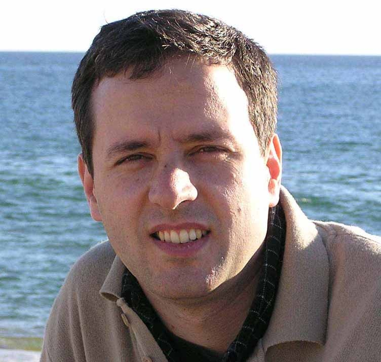
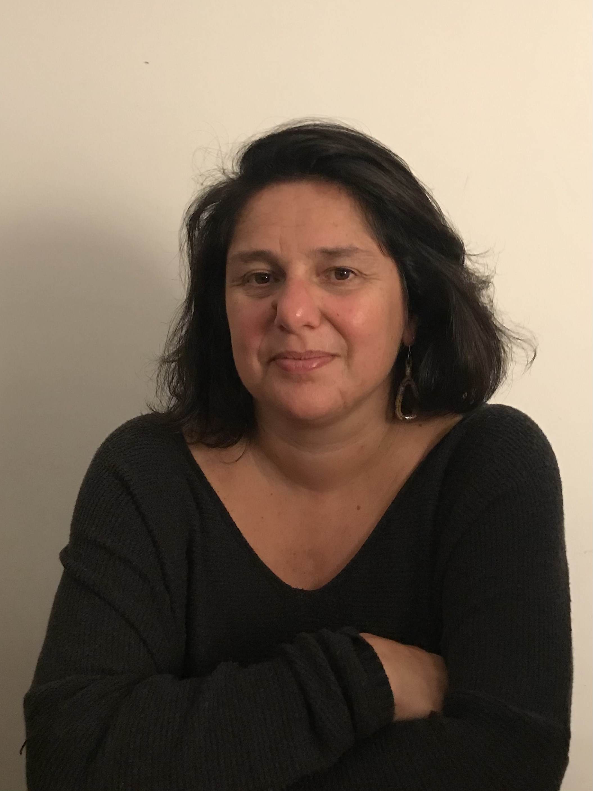
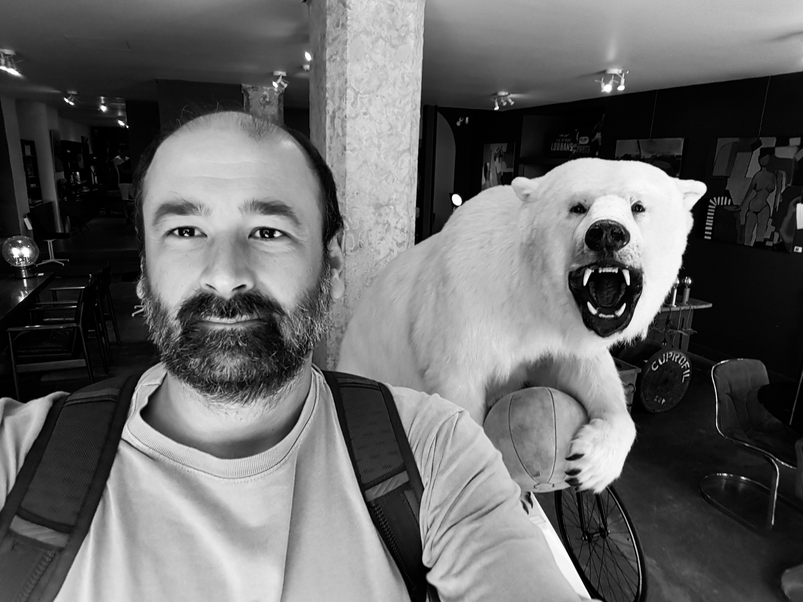
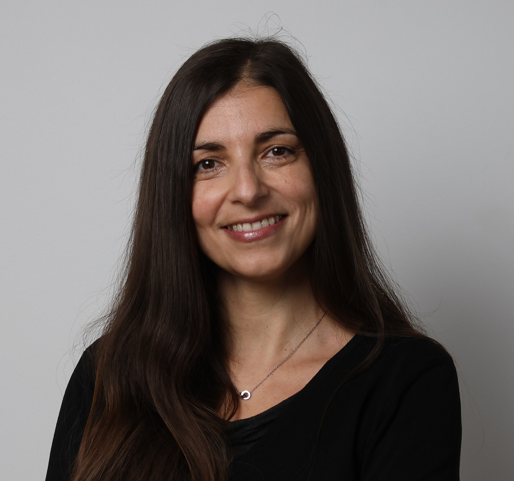
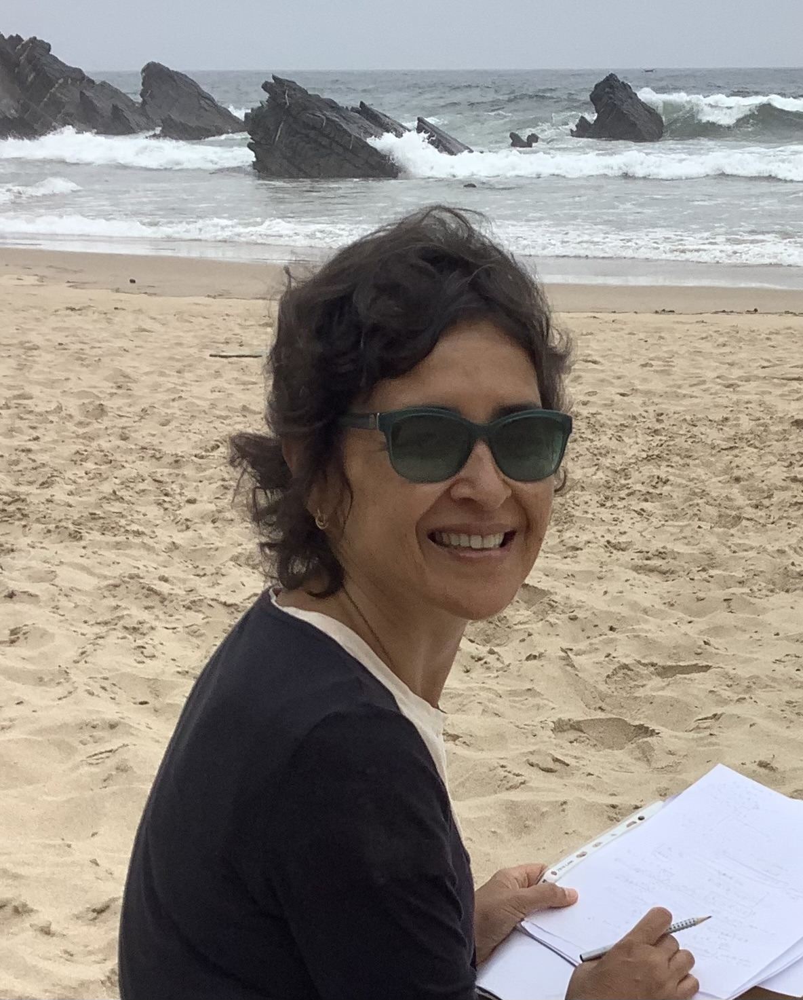
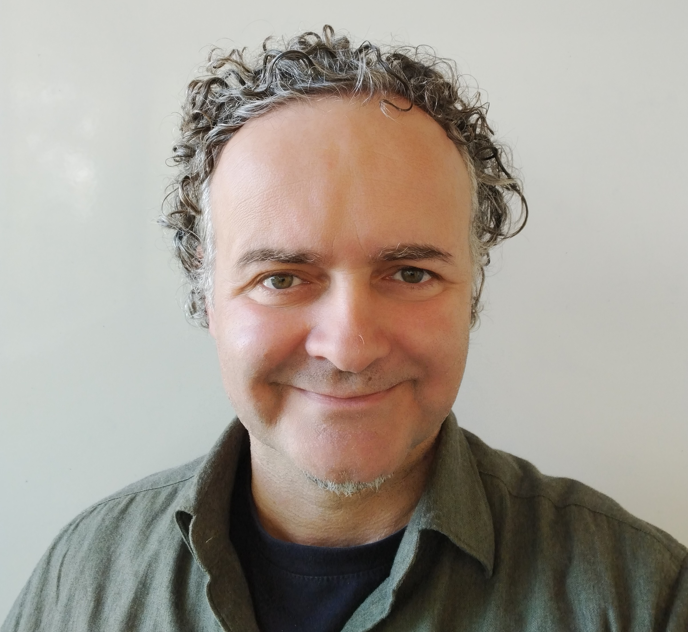
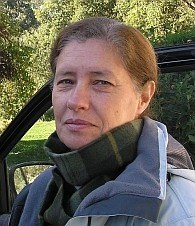
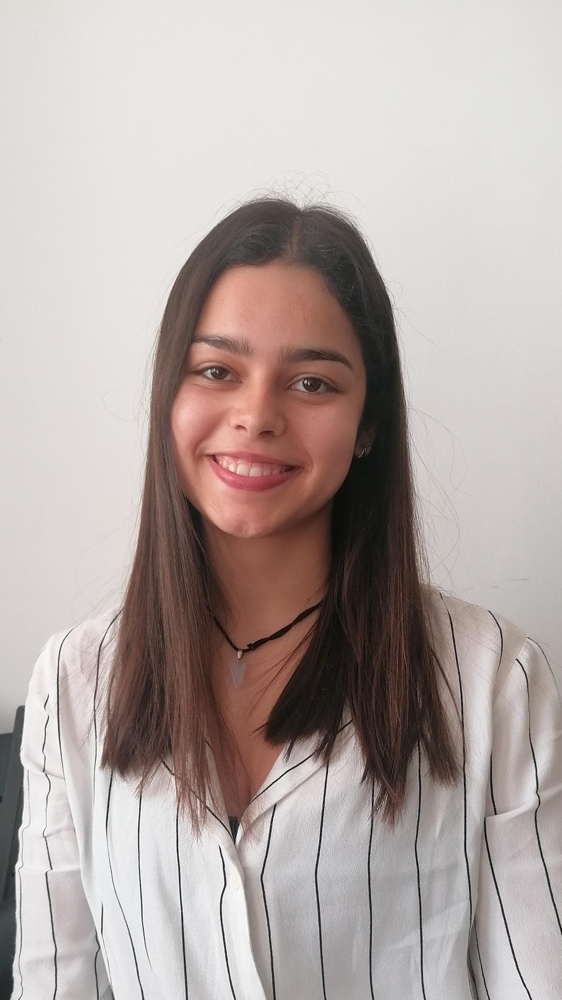
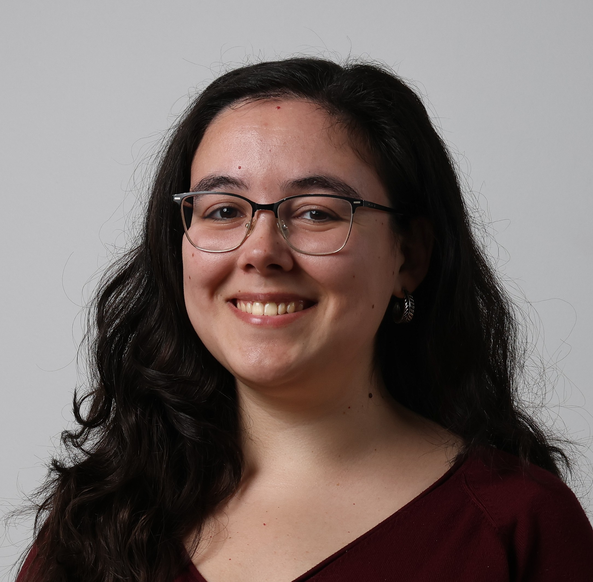

Localização: FCUL, Sala X.X.X
O objectivo deste evento é dar a conhecer algumas pontes entre biologia, estatística, informática e matemática. Os oradores irão falar sobre a importância da interdisciplinaridade nestas áreas de forma acessível para todos. No final haverá uma discussão em que os participantes poderão colocar questões aos oradores.
Todos são bem-vindos. A inscrição (até dia 26/abril) é grátis mas obrigatória.
Programa
| 13h45h-14h00 | Boas-vindas, Margarida Santos Reis |
| 14h00-14h30 | De que forma morrem as bactérias?, Francisco Dionísio |
| 14h30-15h00 | Matemática do fluxo sanguíneo, Jorge Tiago |
| 15h00-15h30 | Ciência interligada: como a semântica computacional pode unir disciplinas científicas, Cátia Pesquita |
| 15h30-16h30 | Pausa para café |
| 16h30-17h00 | Living on the edge: navegando na interface entre a biologia e a estatística, Tiago Marques |
| 17h00-17h30 | Análise, Álgebra, Topologia, Simulações? O que é útil na biologia?, Carlota Rebelo |
| 17h30-18h00 | Os modelos matemáticos em biologia são mesmo úteis ou só servem para dar dores de cabeça?, Sara Magalhães |
| 18h00-18h30 | Mesa redonda e discussão. Todos são convidados a participar. |
Oradores
|  |
Francisco Dionísio DBA, CE3C, FCUL |
|
De que forma morrem as bactérias?
Suponhamos que usamos um antibiótico para matar uma população de bactérias num tubo de ensaio. De que forma decai essa população de bactérias depois de se adicionar o antiobiótico à cultura? Instantaneamente? Exponencialmente ao longo do tempo? Ninguém sabe: a morte das bactérias ainda é um mistério. No entanto, a Matemática pode dar uma importante ajuda neste campo ao evitar que se gaste muito dinheiro à procura de gambuzinos. |
|
|  |
Sara Magalhães DBA, CE3C, FCUL |
|
Os modelos matemáticos em biologia são mesmo úteis ou só servem para dar
dores de cabeça?
A grande maioria das pessoas, incluindo estudantes de Biologia, tem uma reacção quase aalérgica quando vê uma fórmula matemática. Haveria um estudo muito interessante a fazer sobre as causas desta reação tão generalizada. Mas, não sendo eu psicóloga, vou concentrar-me nas consequências desta náusea. Muitas áreas da Biologia, em particular Ecologia e Evolução, assentam em previsões desenvolvidas por modelos matemáticos. É importante percebermos os pressupostos destes modelos assim como as suas previsões para desenharmos experiências que tenham impacto. E não é assim tão complicado percebê-los, na realidade há textos com palavras bem mais complicadas que alguns modelos matemáticos! Na minha apresentação pretendo desmistificar esses modelos matemáticos e assim contribuir um pouco para o fim desta aversão irracional. |
|
|  |
Tiago Marques CREEM, University of St. Andrews, DBA, CEAUL, FCUL |
|
Living on the Edge: navegando na interface entre a biologia e a
estatística
Um dos estatísticos mais influentes do século XX, Fisher, era na realidade um cientista versátil, que fez carreira numa estação agronómica. O inventor do famoso teste de t, Student (Gosset, na realidade!) era um cervejeiro. Uma das mais influentes mulheres nas origens da estatística, Florence Nightingale, era enfermeira. O Jon Snow original era médico e descobriu a causa da cólera usando a estatística. E Bayes era um reverendo, sendo a base de todo um paradigma fundamental da estatística moderna. A interface entre áreas distintas é tipicamente muito produtiva. Para essa produtividade ser maximizada os mundos têm de querer interagir, e temos de encontrar uma linguagem comum. A ecologia é um campo fértil para o desenvolvimento de novas metodologias estatísticas, e existe todo um conjunto de classes de modelos para lidar com aspetos da ecologia tão dispares como movimento animal, densidades populacionais ou probabilidade de ocupação. Tal como na natureza, existem animais que são especialistas e animais que são generalistas, e na ciência é igual. Considero-me acima de tudo um cientista, movido pela curiosidade sobre o mundo que o rodeia. Nesta conversa vou apresentar alguma da minha investigação na interface entre a biologia e a estatística e refletir sobre a vida nessa interface - living on the edge - como podemos ser fundamentais para muita coisa sem ser um especialista em coisa nenhuma. |
|
|  |
Cátia Pesquita DI, LASIGE, FCUL |
|
Ciência interligada: como a semântica computacional pode unir
disciplinas científicas
A investigação científica é cada vez mais interdisciplinar, com cientistas de diferentes áreas a unirem esforços para enfrentar problemas complexos. Contudo, esta abordagem interdisciplinar também destacou os desafios de comunicação e colaboração entre disciplinas, visto que cada campo tem a sua própria terminologia, modelos e métodos. Nesta palestra, vamos explorar como a semântica computacional pode ajudar a preencher a lacuna entre diferentes disciplinas científicas, estabelecendo um contexto comum. Especificamente, vamos examinar como a inteligência artificial, tecnologias da web semântica e grafos de conhecimento podem ser usados para extrair e integrar informações de diferentes fontes e facilitar a descoberta de novas conexões e insights. Tendo por base exemplos da biologia molecular, da terapêutica oncológica e da previsão em ambiente hospitalar, vamos discutir os desafios e oportunidades da ciência interligada. |
|
|  |
Carlota Rebelo DM, CEMAT, FCUL |
|
Análise, Álgebra, Topologia, Simulações? O que é útil na biologia?
A resposta é: tudo. Nesta palestra darei exemplos de epidemiologia e de dinâmica de populações que mostram que as várias ferramentas são úteis e complementam-se. |
|
|  |
Jorge Tiago DM, CEMAT, IST |
|
Modelação matemática do fluxo sanguíneo
O desenvolvimento das técnicas de computação permitem hoje simular modelos tridimensionais do escoamento de fluxo em artérias. O realismo destas simulações abre as portas para a conceptualização de novas ferramentas de diagnóstico e prognóstico que podem ser utilizadas em contexto clínico. Nesta apresentação iremos mencionar algumas destas aplicações, bem como as principais hipóteses na construção destes modelos. Mostraremos também alguns resultados computacionais e discutiremos as perspetivas que estes trazem. |
|
Organizadores
| Carlota Rebelo (DM) | Francisco Dionísio (DBV) |  | Margarida Santos Reis (Direção) | Cátia Pesquita (DI) | |||
|  | Catarina Monteiro (NEMMA) | Carlos Gonçalves (NEBFCUL) |  | Marta Contreiras Silva (LASIGE/DI) |